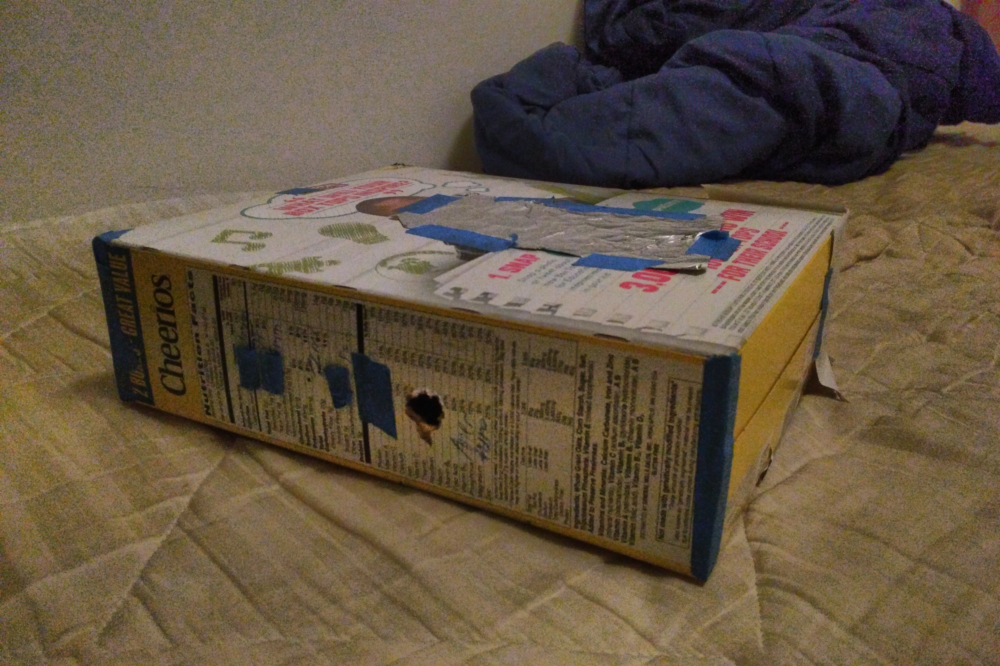

In this project, we build an improvised pinhole camera to capture long exposure images, which uses the camera obscura effect.
My design is quite simple, which is made up a lightproof cereal box with four pinhole diameters: 0.8mm, 2mm, 2.5mm, and 5mm.
There is a larger hole for the camera aperture. I borrowed a specially configured Canon PowerShot for this project.
There were a few problems with my pinhole box setup. Initially, it was not lightproof, and there was a noticable red light artifact.
Furthermore, I had two screen setups and two resulting focal distances: 10cm, and 30cm.
The first screen setup was far too short, since I was not capable of creating a pinhole of 0.1-0.2mm
using the formula $ d = 2\sqrt{f \lambda} $.
The second screen projected onto a screen that had too long of an aspect ratio.
This was perfect for taking pictures of tall and wide objects like the Campanile and the Memorial Glade, but not others.
In both cases, the camera could not focus closer than the screen sizes. This camera was specifically designed for long-distance detail shots.
The correct pinhole is a balance. Smaller pinholes do not let enough light in, which leads to an unfocused, low-contrast image.
Larger pinholes let in too much light, resulting in very bright monotone images.
Images become much sharper and more defined as the pinhole diameters approaches the optimum in terms of focal laws and physics.
Pinhole camera design

VLSB architecture detail, 1mm
VLSB architecture detail, 2mm
VLSB architecture detail, 2.5mm
VLSB architecture detail, 5mm
Campanile, SW side, 1mm
Campanile, SW side, 2mm
Campanile, SW side, 2.5mm (Oops, and also me.)
Campanile, SW side, 5mm
My Own Selected Images
Campanile, W side from a distance, 2mm
Hearst Mining Circle, Stanley Hall, 2mm
Wheeler south side, architecture detail, 2mm
Memorial Glade, McCone Hall, McLaughlin Hall, Evans Hall, 2mm
(Side by Side) Pinhole Diameter Comparisons
1, 2, 2.5, 5mm from left to right
1, 2, 2.5, 5mm from left to right